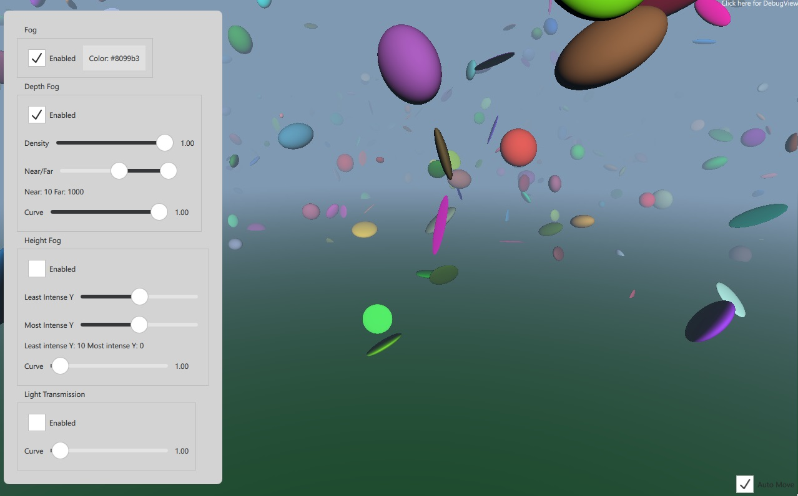

Qt Quick 3D - Simple Fog Example
Demonstrates how to enable fog in the 3D scene.

This example demonstrates the usage of the SceneEnvironment's fog property. The scene contains a number of instanced spheres, with controls that can be used to tune the various properties of the Fog object.
Fog { id: theFog enabled: cbFogEnabled.checked depthEnabled: cbDepthEnabled.checked heightEnabled: cbHeightEnabled.checked transmitEnabled: cbTransmitEnabled.checked density: valDensity.value depthNear: valDepth.first.value depthFar: valDepth.second.value depthCurve: valDepthCurve.value leastIntenseY: valHeightMin.value mostIntenseY: valHeightMax.value heightCurve: valHeightCurve.value transmitCurve: valTransmitCurve.value }
Files: